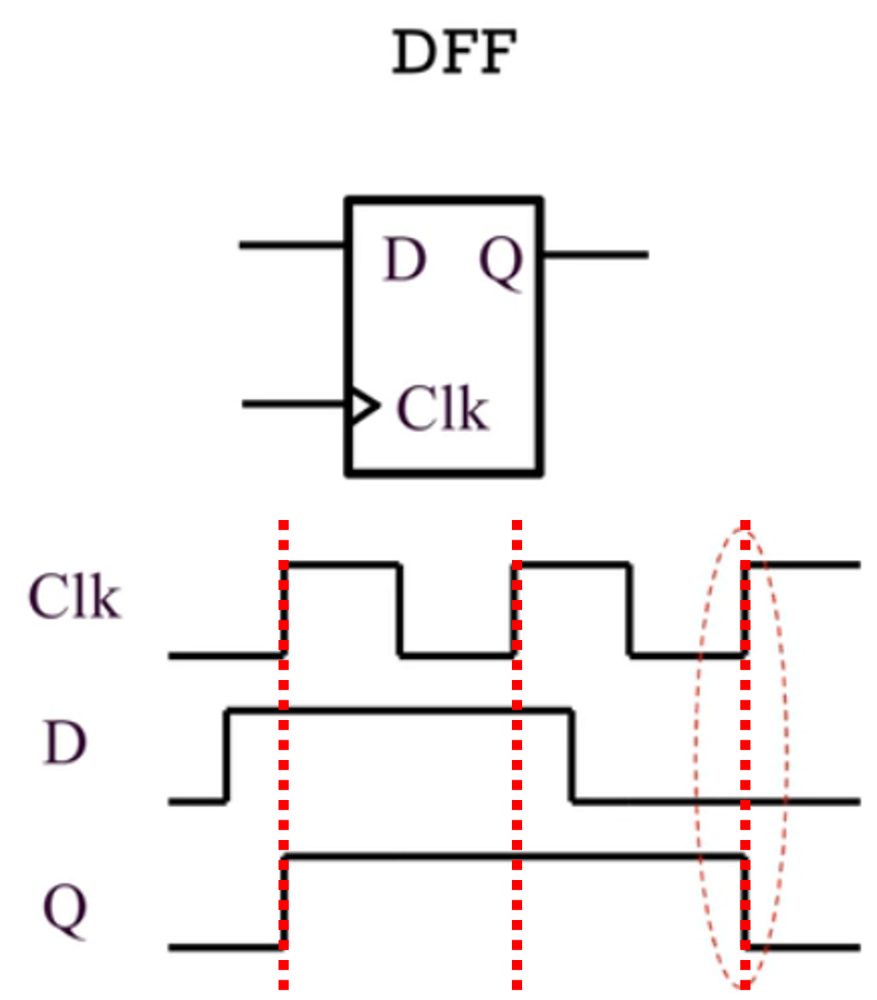

module DFF( Clk, D, reg Q ); always @ (posedge Clk)begin Q <= D; end endmodule What is the module name?
Knowledeg point: A D Flip-Flop (DFF) stores the value of the data input (D) on the rising edge of the clock (Clk) and holds this value until the next clock edge or a reset occurs. Key Components: Data Input (D): The value to be stored. Clock (Clk): Triggers data storage on the rising edge. Output (Q): Holds the stored value.